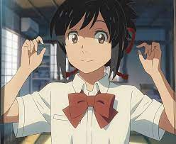

My Resume

PROFILE
Student of Bachelor's in Computer Applications. I consider myself as a responsible
and orderly person. I'm looking forward for my first work experience.
EDUCATION
Dr. Ram Manohar Lohia Awadh University.
Graduation (Persuing)
Canossa Convent Girls' Inter College
Intermediate (2022)
SKILLS
-
Social Media Management
- Web Analytics
- Content Writring
EXPERIENCES
- Won college debates.
- Headed college events.
- Worked as a social media manager for a company.
CONTACT SOURCES